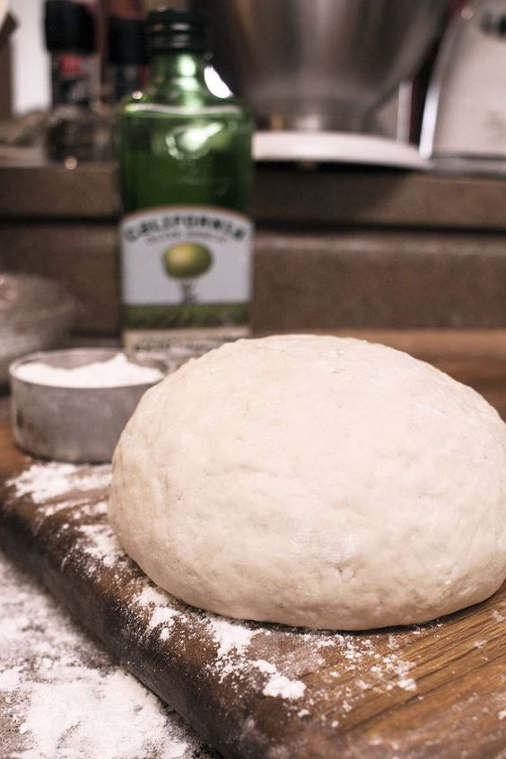

Five Minute Pizza Dough
Ingredients
- 1(.25oz) Package Active Dry Yeast
- 2 1/2 Cups All Purpose Flour
- 2 Tablespoon Honey or 1 Tablespoon granulated sugar
- 1 Teaspoon Salt
- 2 Tablespoon Olive Oil
- 1 Cup Water
- Cornmeal for dusting pan
Directions
- Preheat oven to 450o F.
- In a large bowl disolve yeast and honey or sugar in warm water (110oF) until yeast becomes frothy
- Add flour, olive oil, and salt. Stir with a wooden spoon until soft dough forms. The dough should be fairly firm. If it is not mix in an additional tablespoon of flour at a time until no longer sticky. If it is too dry, mix in an additional tablespoon of water.
- Roll dough into a ball (for thick crust) or into two seperate balls (for thin crust), or into four separate balls (for indivitual pizzas or extra thin pizzas)
- Let the dough rest for 3-5 minutes while you gather your pizza toppings. If desired store dough coated in zip lock bag with olive oil for up to 3 days, or in the freezer for up to a month.
- Roll dough into desired thickness and shape. Top with your favorite pizza toppings and bake for 8-10 minutes with a pizza pan dusted with cornmeal until browned and bubbly.
Five Minute Pizza Dough Recipe
Contact Me
Send me an email!
University of Montana
32 Campus Drive
Missoula, MT 59812